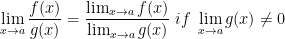
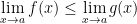
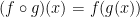
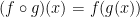

The Tangent Problem
The word tangent is derived from the Latin word tangens, which means "touching." Thus a tangent to a curve is a line that touches the curve. In other words, a tangent line should have the same direction as the curve at the point of contact.
A secant line, from the Latin word secans, meaning cutting, is a line that cuts (intersects) a curve more than once.
We say that the slope of the tangent line is the limit of the slopes of the secant lines, and we can express this symbolically by writing
(we assume that the slope of the tangent line is indeed 2 based on a table of data I was given when writing this example)
Using the point-slope form of the equation of a line (y - y1 = m(x - x1)) we can write the equation of the tangent line through (1, 1) as
Definition of a Limit
Suppose f(x) is defined when x is near the number a. (This means that f is defined on some open interval that contains a, except possibly at a itself.) Then we write
and say "the limit of f(x), as x approaches a, equals L" if we can make the values of f(x) arbitrarily close to L (as close to L as we like) by restricting x to be sufficiently close to a (on either side of a) but not equal to a.
However! x != a. When finding the limit of f(x) as x approaches a, we never consider x = a. In fact, f(x) need not even be defined when x = a. The only thing that matters is how f is defined near a.
Definition of a One-Sided Limit
We write
and say the left-hand limit of f(x) as x approaches a [or the limit of f(x) as x approaches a from the left] is equal to L if we can make the values of f(x) arbitrarily close to L by taking x to be sufficiently close to a with x less than a.
On the otherhand, let's say we require x to be greater than a, we then get a right-hand limit of f(x) as x approaches a is equal to L. We write this as:
Instead of x approaching a from the left, we now have x approaching a from the right.
We can also see that the following is true:
Definition of an Infinite Limit
Let f be a function defined on both sides of a, except possibly at a itself. Then
means that the values of f(x) can be made arbitarily large (as large as we please) by taking x sufficiently close to a, but not equal to a.
The above also applies to negative infinity!
Extending upon this, we can also have infinity for one-sided limits.
Calculating Limits Using the Limit Laws
We can use calculators and the like to help us guess the limit to various functions but we need not rely on this! In fact, we can even obtain incorrect answers via using pure intuition. Instead, let us explore various properties of limits, known as the Limit Laws, to help us calculate limits!
Suppose that c is a constant and the limits
exist. Then
- 
From top to bottom, these laws are known as
- Sum Law
- Difference Law
- Constant Multiple Law
- Product Law
- Quotient Law
We also have the Power Law and it looks like this:
where n is a positive integer.
We also have the following two special limits:
Building on this, we also have this other special limit:
where n is a positive number.
A similar limit holds for roots as follows:
where n is a positive integer (If n is even, we assume that a > 0.)
More generally, we have the following law known as the Root Law
where n is a positive integer. [If n is even, we assume that ]
Direct Substitution Property
If f is a polynomial or a rational function and a is in the domain of f, then

It's also good to note that we can simplify our function and even manipulate it algebraically so that we can apply direct substitution. For example,
For this next problem, I won't be writing out all the steps. Just not that you need to rationalize the numerator to solve it.
The answer is 1/6. Figure it out.
Squeeze Theorem
Firstly, if when x is near a (except possibly at a) and the limits of f and g both exist as x approaches a, then

In regards to the Squeeze Theorem, if when x is near a (except possibly at a) and

then
Continuity
A function f is continuous at a number a if

This definition implicitly requires the following three things if f is continuous at a:
- f(a) is defined (that is, a is in the domain of f)

If f is defined near a (in other words, f is defined on an open interval containing a, except perhaps at a), we say that f is discontinuous at a (or f has a discontinuity at a) if f is not continuous at a.
There are several types of discontinuity. For example:
- Removable is when there is a 'hole' in the graph.
- Infinite discontinuity is just as it implies. Infinity.
- Jump discontinuities are when the function 'jumps' from one value to another. Think of a staircase and not necessarily a hole.
A function f is continuous on an interval if it is continuous at every number in the interval.
If f and g are continuous at a and c is a constant, then the following functions are also continuous at a:
- f + g
- f - g
- cf
- fg
- if g(a) != 0
Any polynomial is continuous everywhere; that is, it is continuous on
Any rational function is continuous wherever it is defined; that is, it is continuous on its domain.
If f is continuous at b and , then . In other words,
If g is a continuous at a and f is continuous at g(a), then the composite function  given by  is continuous at a.
given by  is continuous at a.
The Intermediate Value Theorem
Suppose that f is continuous on the closed interval [a,b] and let N be any number between f(a) and f(b), where . Then there exists a number c in (a, b) such that f(c) = N.
Limit at Infinity
Let f be a function defined on some interval . Then
means that the values of f(x) can be made arbitarily close to L by requiring x to be sufficiently large.
The opposite holds true as well when the function f is defined on some interval .
The line y = L is called a horizontal asymptote of the curve y = f(x) if either
For example, the following equation has a horizontal asymptote of y = 1.

If r > 0 is a rational number, then
If r > 0 is a rational number such that xr is defined for all x, then
Derivatives and Rates of Change
The tangent line to the curve y = f(x) at the point P(a, f(a)) is the line through P with slope
provided that this limit exists.
There is also another expression for the slope of a tangent line that is sometimes easier to use! If h = x - a, then x = a + h and so the slope of the secand line PQ is
For more information, we shall continue our lessons on derivatives here.
{kind=link}
{kind=link}
{kind=link}
{kind=link}
{kind=link}
{kind=link}
{kind=link}
{kind=link}
{kind=link}
{kind=link}
{kind=link}
{kind=link}
{kind=link}
{kind=link}
{kind=link}
{kind=link}
{kind=link}
{kind=link}
{kind=link}
{kind=link}
{kind=link}
{kind=link}
{kind=link}
{kind=link}
{kind=link}
{kind=link}
{kind=link}
{kind=link}
{kind=link}
{kind=link}
{kind=link}
{kind=link}
{kind=link}
{kind=link}
{kind=link}
{kind=link}
{kind=link}
{kind=link}
{kind=link}
{kind=link}
{kind=link}
{kind=link}
{kind=link}
{kind=link}